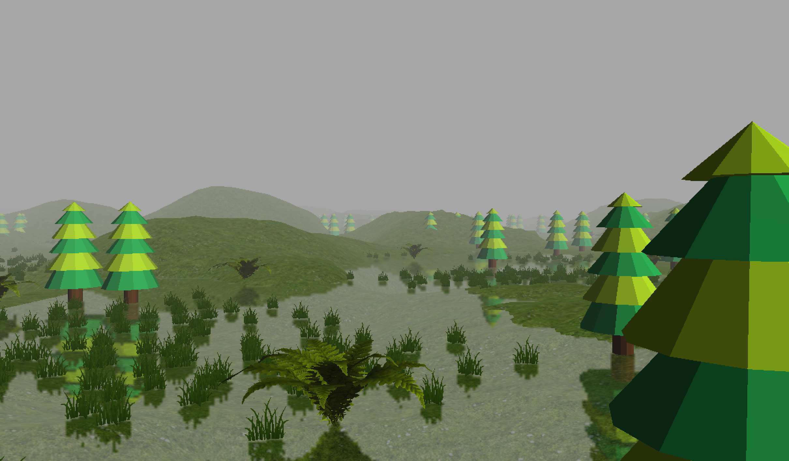
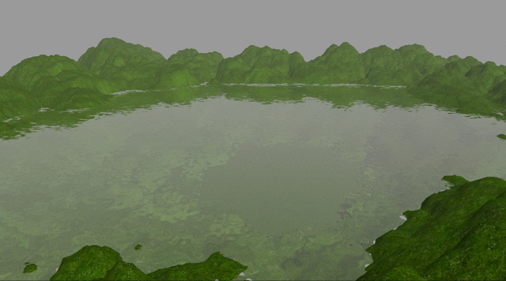

1. Background
A water simulation using Java, GLSL, and OpenGL that focuses on a realistic render of water involving reflection and refraction textures. This page goes through the process of how this project was completed and the results at each step. Collaborators: Timothy Kuo and Andrew Hwang Source Code Our first step was completing a background map to contain the water. It would be difficult to simulate water without some sort of container, so we decided to create a map for it. This was done by finding 3D models of trees and terrain online and putting them inside our world coordinates. From there, we created the viewport and some shader files for basic local illumination models. Finally, we placed a texture mapping onto the terrain and trees as well as a heigh map to give terrain depth that will be later used as the container for the water.

2. Water Frame Buffer
At any point in the scene, we will be looking at the water from two angles – one, the reflection angle to see everything below the surface and two, at a refraction angle to see everything above the surface. To do this, we created our own frame buffers that act as textures for the default frame buffer. By creating two frame buffers for both reflection and refraction, we can render these frame buffers as reflection and refraction textures over our default frame buffers to texture our water that updates as we move our camera angle. It was also necessary to create an initial water quad that we will adjust using shader code.
3. Clipping Planes
When we render the refraction texture, we only want to render things that are below the surface. In the same way, when we render the reflection texturem we will only want to render the things above the surface. Essentially, we will have two cameras in order to represent a water's properties. It's important that we use clip planes in order to improve performance.
4. Reflection and Refraction
To show the reflection and refraction textures, we will use a projective texture mapping technique. This was done by finding the appropriate points on the clipping coordinate system and then converting this coordinate system to the screen space coordinate system to find the correct point on our textures to show on the water. The two textures will then be mixed and loaded into our frame buffer in the water renderer as discussed earlier.
5. DuDv Maps - Rippling
DuDv maps will represent the distortion at different parts of the water with mostly red and green channels. This will be used to give the water a rippling effect to make it look more realistic. By adding the dudv map texture directly to the reflection and refraction texture coordinates, we can add a distortion to the reflection and refraction. However, we wanted to make the ripples move after adding the distortion to give it a more realistic look. Thus, we added an offset to the dudv map as a function over time in both the x and y directions. We removed the trees at this stage to speed up the rendering.
6. Fresnel Effect
The fresnel effect describes how the water looks different depending on the viewing angle. At a lower angle, the water looks very reflective but when looking at it from above, the water looks much more transparent. We can do this by using the angle of the camera. This way, when our angle is higher, we can show more of the refraction texture than the reflection texture and vice versa at a lower angle.

7. Specular Lighting
We also added a spectral lighting effect by using a similar method to the way that we did the dudv mapping. Our water is actually flat, so we have to use a normal map to pretend that it is bumpy along different points on the water's surface. It was also necessary to add in vectors to represent the light vectors and color in order to represent where the sun is. Using these vectors, we can easily calculate the specular lighting where the closer the reflected light and view vector are, the brighter the specular highlight.